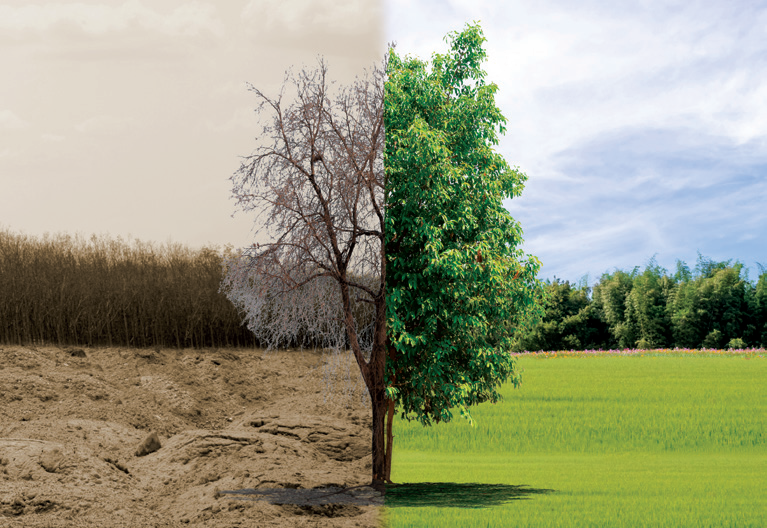

The learner will be able to
Understand the interaction between organisms and their environment.
Describe biotic and abiotic factors that influence the dynamics of populations.
Describe how organisms adapt themselves to environmental changes.
Learn the structure of various fruits and seeds related to their dispersal mechanism.